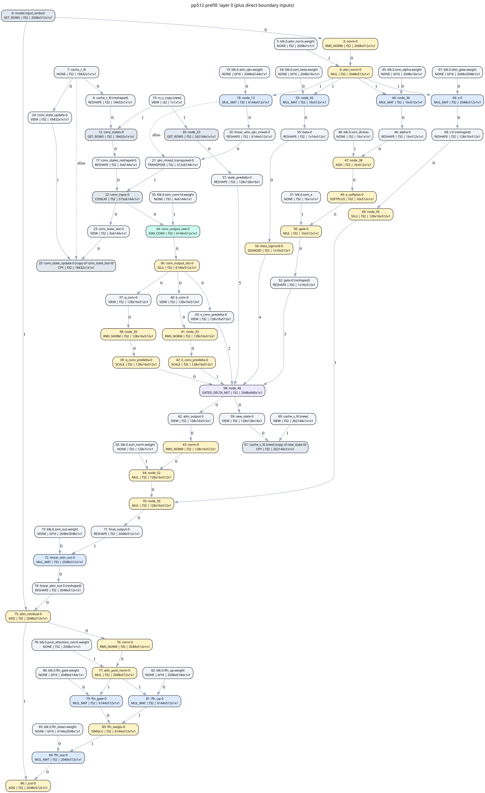

Captured llama.cpp computational graphs · BF16 weights · text inference · one sequence
1,441 scheduled nodes per graph. The model has 18 recurrent layers and 6 full-attention layers. Matrix/convolution work is inventoried; accelerator performance awaits your hardware specification.
prefill raw graph prefill full DOT prefill operations prefill summary decode raw graph decode full DOT decode operations decode summaryScroll to explore. Blue: matrix; purple: recurrence; teal: convolution; yellow: vector; gray: memory/views. Shapes use GGML innermost dimension first. Boundary inputs are included.

| Operation | Prefill | Decode |
|---|---|---|
| GET_ROWS | 74 | 74 |
| RMS_NORM | 115 | 115 |
| MUL | 121 | 121 |
| RESHAPE | 228 | 228 |
| VIEW | 254 | 254 |
| SCALE | 72 | 72 |
| CPY | 72 | 72 |
| MUL_MAT | 199 | 199 |
| TRANSPOSE | 18 | 18 |
| CONCAT | 18 | 18 |
| SSM_CONV | 18 | 18 |
| SILU | 36 | 36 |
| ADD | 66 | 66 |
| SOFTPLUS | 18 | 18 |
| SIGMOID | 24 | 24 |
| GATED_DELTA_NET | 18 | 18 |
| SWIGLU | 24 | 24 |
| ROPE | 12 | 12 |
| SET_ROWS | 12 | 12 |
| PERMUTE | 24 | 24 |
| SOFT_MAX | 6 | 6 |
| CONT | 12 | 12 |
Graph scope excludes vision and MTP. A CPU graph is an input to accelerator modeling; hardware mapping, fusion, memory traffic, and execution time remain to be specified. See REPORT.md for arithmetic coverage and limitations.
{kind=link}